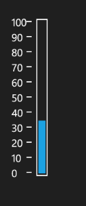
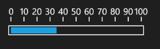

The Linear Gauge supports following two types of Orientation:
· Horizontal
· Vertical
The default orientation for Linear Gauge is ‘Vertical’.
The following code example illustrates how to set orientation property to Linear Gauge:
|
[XAML] <sync:LinearGauge Height="400" VerticalAlignment="Center" HorizontalAlignment="Center" Orientation="Vertical" x:Name="LinearGauge1" Width="152"> </sync:LinearGauge> |
|
[C#] this.LinearGauge1.Orientation = GaugeOrientation.Vertical; |

Figure 50: Linear Gauge in Vertical Orientation
|
[XAML] <sync:LinearGauge Height="400" VerticalAlignment="Center" HorizontalAlignment="Center" Orientation="Horizontal" x:Name="LinearGauge1" Width="152"> </sync:LinearGauge> |
|
[C#] this.LinearGauge1.Orientation = GaugeOrientation.Horizontal; |

Figure 51: Linear Gauge in Horizontal Orientation